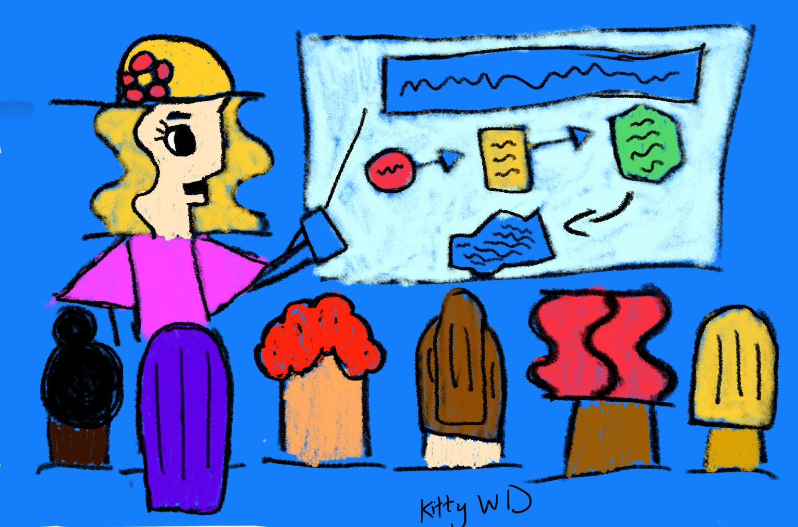

Có thể có nhiều kiểu/loại sách khác nhau tuy nhiên có thể chia làm hai loại chính, một loại là sách truyện (fiction) và một loại khác là sách thông tin (non-fiction).
Bạn có thể chọn theo từng nhóm tuổi cụ thể (như bài trước), hoặc có một số nguyên tắc để lựa chọn cho nhóm tuổi nhưng cũng theo loại sách loại sách như sau.
Đối với sách truyện:
Cốt truyện hấp dẫn và một bối cảnh thú vị.
Chọn theo chủ đề sẽ thu hút đặc biệt cho con bạn.
Ngôn ngữ giàu hình tượng.
Trình độ đọc và từ vựng phù hợp với lứa tuổi.
Nhân vật hấp dẫn và đáng tin cậy.
Đọc được. Thử đọc một đoạn xem ngôn ngữ có trôi chảy hay vụng về và nhạt nhẽo?
Đối với sách thông tin:
Nếu như chọn những loại sách cung cấp thông tin cho bản thân mình, bạn có những tiêu chuẩn cao như thế nào thì khi chọn sách "không phải hư cấu" (non-fiction) dành cho trẻ em - hãy áp dụng tiêu chuẩn cao như vậy.
Thông tin trình bày rõ ràng, hợp lý và có tổ chức không?
Độ chính xác của thông tin. Lật thử vài trang để kiểm tra nhanh độ chính xác. Nếu thấy có một lỗi nào đó thì cần cân nhắc về mức độ chính xác của nội dung toàn cuốn sách.
Thông tin có được cập nhật không? Ví dụ sách về địa lý Việt Nam, phải chú trọng về ranh giới địa lý. Kiểm tra năm xuất bản và chọn bản cập nhật nhất.
Tác giả viết cuốn sách là ai, họ có quyền và phẩm chất, năng lực gì.
Thông tin trong sách được sắp xếp tốt không? Có được trình bày logic để người đọc dễ hiểu không?
Tính phù hợp về lứa tuổi của thông tin ra sao? Đối với độc giả nhỏ tuổi, thông tin có rõ ràng và đơn giản; đối với độc giả lớn tuổi, thông tin có sâu sắc và toàn diện không?
Hình ảnh minh họa có chất lượng cao và phù hợp với chữ không?
Có vui không? Nếu tác giả có thể truyền đạt được cảm giác nhiệt tình và năng lượng của cuốn sách cho bạn, thì có thể chắc chắn sẽ phấn khích với con bạn.
Về hình thức (minh họa và thiết kế):
Hình minh họa sống động.
Nghệ thuật sẽ thúc đẩy tình yêu cái đẹp cho con trẻ.
Hình minh họa được đồng bộ hóa với chữ và xuất hiện cùng với phần chữ mà hình minh họa.
Cách thể hiện minh hoạ phù hợp với câu chuyện.
Nhìn vào thiết kế tổng thể của cuốn sách, bao gồm bìa, kích thước và kiểu chữ. Ví dụ, sách tranh nên có chữ in đậm, dễ đọc và hình dạng phù hợp với tay trẻ.
Nhìn chung, đọc là kỹ năng quan trọng, cực kỳ quan trọng mà trẻ em cần phải học. Đọc giúp cho trẻ phát triển được trí tưởng tượng và trí thông minh, cho phép chúng gia tăng kiến thức trong suốt cuộc đời.
Một trong số những món quà quý giá mà cha mẹ tặng được cho con, là tình yêu đối với SÁCH!
Khi mình đi học nước ngoài, ở bậc học cao hơn trung học, sinh viên được đòi hỏi phải đọc cực kỳ nhiều. Lúc từ Việt Nam qua, mình đã bị sốc vì hồi học đại học chỉ có đọc giáo trình cho thuộc rồi đi thi, đâu có tài liệu gì nhiều dữ vậy…
Nhưng …thế đấy, nước phát triển, họ đi rất nhanh! Không đọc từ nhỏ, thì mình tụt hậu ngay thôi!
Nhà mình khi đi chọn sách cùng con hoặc cho con, cũng thường áp dụng những nguyên tắc này. Nay mình có cơ hội đọc lại để chia sẻ cùng các bạn. Mong rằng đọc bài này qua một lần, các bạn sẽ nhanh chóng áp dụng được trên thực tế để chọn sách cho con mình.
Tài liệu tham khảo:
Lần tới:
Trẻ em không thích đọc sách, phải làm sao?
P/S: hình minh hoạ cũng do con gái mình vẽ, đố các bạn, hình này về chủ đề gì nà?!
